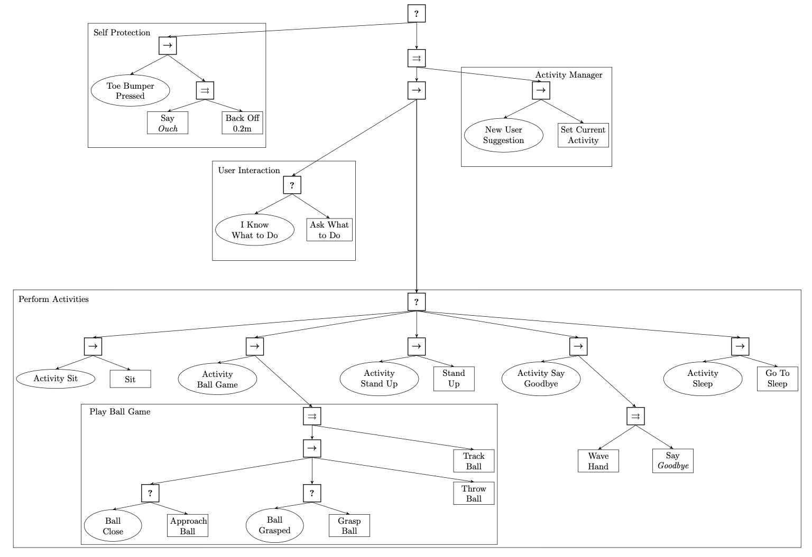
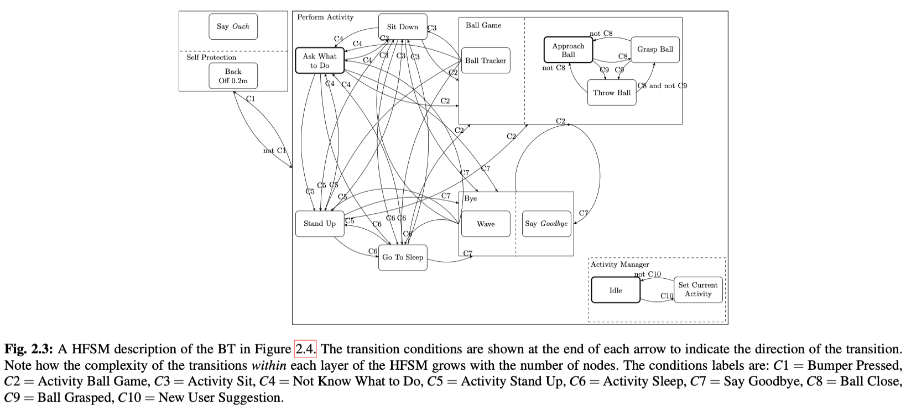
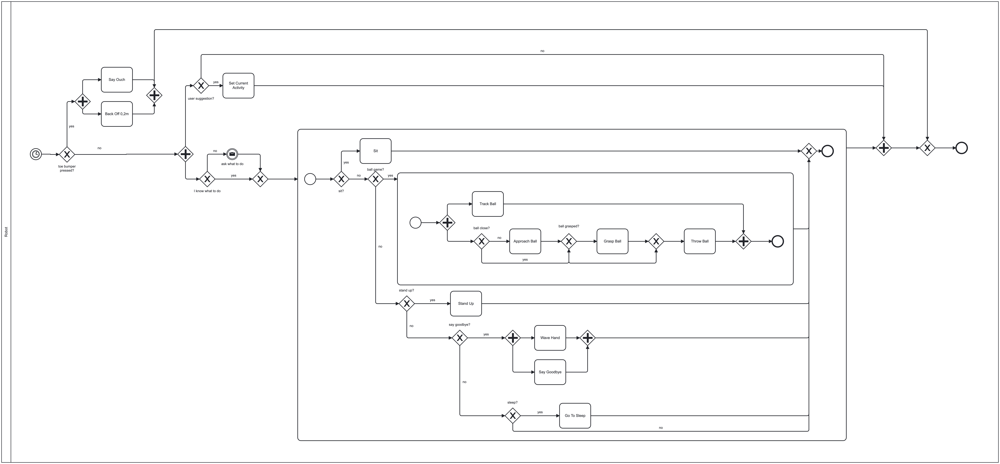

Humanoid Robot
Description
A humanoid robot is tasked with interacting safely and intuitively with nearby humans while performing a set of predefined daily activities. The robot continuously monitors its environment for safety, if a bumper is pressed, it immediately backs away and warns by saying “Ouch.” When idle or uncertain, the robot asks the user what to do next. If the user provides a suggestion, the robot updates its current activity accordingly. If the robot already knows what to do, it proceeds autonomously. The robot can perform several activities, including sitting down, standing up, playing a ball game, saying goodbye, and going to sleep. During the ball game, the robot searches for the ball, approaches it, grasps it, and can track or throw it as required by the game. If the ball moves or is thrown again, the robot interrupts its current motion and immediately begins approaching the ball’s new location. When the user ends the interaction, the robot waves or says goodbye. If instructed to sleep—or if no further tasks are available—the robot moves into a safe resting position.
Colledanchise, Michele, and Petter Ögren. Behavior trees in robotics and AI: An introduction. CRC Press, 2018.
BT

SM

HTN

BPMN
